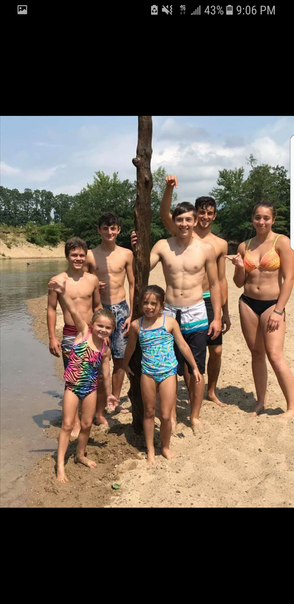

Friends and Family
I have two brothers and one sister.
Ashleigh is my only sister. She is 20 and attending University of New England.
Jake is the youngest, currently in high school at the age of 15.
James is the oldest at the age of 25 and is a pharmacist. He had graduated from Husson University.
I only have two friends from home named Brendan and Alex. Brendan is a senior in high school and Alex is a Freshmen at Thomas College. I have made new friends since I have been here but to many to name but they all mean a lot to me.